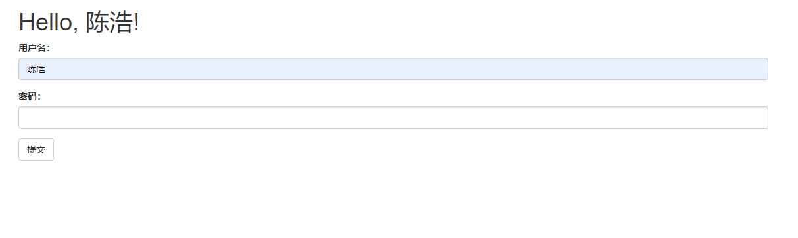

Web表单
本文最后更新于：2021年8月2日 早上
使用HTML可以创建Web表单，供用户填写信息。表单数据由Web浏览器提交给服务器，这一过程通常使用POST请求。Flask请求对象包含客户端在请求中发送的全部信息，对包含表单数据的POST请求来说，用户填写的信息通过request.form访问。尽管Flask的请求对象提供的信息足以处理Web表单，但有些任务很单调，而且要重复操作。比如，生成表单的HTML代码和验证提交的表单数据。
Flask-WTF扩展可以把处理Web表单的过程变成一种愉悦的体验。这个扩展对独立的WTForms包进行了包装，方便集成到Flask应用中。Flask-WTF及其依赖可使用pip安装：
1 | |
配置
与其他多数扩展不同，Flask-WTF无须在应用层初始化，但是它要求应用配置一个密钥。密钥是一个由随机字符构成的唯一字符串，通过加密或签名以不同的方式提升应用的安全性。Flask使用这个密钥保护用户会话，以防被篡改。每个应用的密钥应该不同，而且不能让任何人知道。
1 | |
app.config字典可用于存储Flask、扩展和应用自身的配置变量。使用标准的字典句法就能把配置添加到app.config对象中。这个对象还提供了一些方法，可以从文件或环境中导入配置。
Flask-WTF之所以要求应用配置一个密钥，是为了防止表单遭到跨站请求伪造（CSRF, cross-site request forgery）攻击。恶意网站把请求发送到被攻击者已登录的其他网站时，就会引发CSRF攻击。Flask-WTF为所有表单生成安全令牌，存储在用户会话中。令牌是一种加密签名，根据密钥生成。
为了增强安全性，密钥不应该直接写入源码，而要保存在环境变量中。
表单类
使用Flask-WTF时，在服务器端，每个Web表单都由一个继承自FlaskForm的类表示。这个类定义表单中的一组字段，每个字段都用对象表示。字段对象可附属一个或多个验证函数。验证函数用于验证用户提交的数据是否有效。
定义表单类：
1 | |
LoginForm表单中有一个名为name的文本字段和一个名为submit的提交按钮。StringField类表示属性为type="text"的HTML <input>元素。SubmitField类表示属性为type=”submit”的HTML <input>元素。字段构造函数的第一个参数是把表单渲染成HTML时使用的标注（label）。
StringField构造函数中的可选参数validators指定一个由验证函数组成的列表，在接受用户提交的数据之前验证数据。验证函数DataRequired()确保提交的字段内容不为空。
FlaskForm基类由Flask-WTF扩展定义，所以要从flask wtf中导入。然而，字段和验证函数却是直接从WTForms包中导入的。
WTForms支持的HTML标准字段。
| 字段类型 | 说明 |
|---|---|
| BooleanField | 复选框，值为TRUE和FALSE |
| DateField | 文本字段，值为datetime.date格式 |
| DateTimeField | 文本字段，值为datetime.datetime格式 |
| DecimalField | 文本字段，值为decimal.Decimal |
| FileField | 文件上传字段 |
| HiddenField | 隐藏的文本字段 |
| MultipleFileField | 多文件上传字段 |
| Fieldlist | 一组指定类型的字段 |
| FloatField | 文本字段，值为浮点数 |
| FormField | 把一个表单作为字段嵌入另一个表单 |
| IntegerField | 文本字段，值为整数 |
| PasswordField | 密码文本字段 |
| RadiField | 一组单选按钮 |
| SelectField | 下拉列表 |
| SelectMultipleField | 下拉列表，可选择多个值 |
| SubmitField | 表单提交按钮 |
| StringField | 文本字段 |
| TextAreaField | 多行文本字段 |
| WTForms内建的验证函数。 |
| 验证函数 | 说明 |
|---|---|
| DataRequired | 确保转换类型后字段中有数据 |
| 验证电子邮件地址 | |
| EqualTo | 比较两个字段的值，常用于要求输入两次密码进行确认的情况 |
| InputReqiured | 确保转换类型前字段中有数据 |
| IPAddress | 验证IPv4网络地址 |
| Length | 验证输入字符串的长度 |
| MacAddress | 验证MAC地址 |
| NumberRange | 验证输入的值在数字范围之内 |
| Optional | 允许字段中没有输入，将跳过其他验证函数 |
| Regexp | 使用正则表达式验证输入值 |
| URL | 验证URL |
| UUID | 验证UUID |
| AnyOf | 确保输入值在一组可能的值中 |
| NoneOf | 确保输入值不在一组可能的值中 |
把表单渲染成HTML
表单字段是可调用的，在模板中调用后会渲染成HTML。假设视图函数通过form参数把一个NameForm实例传入模板，在模板中可以生成一个简单的HTML表单，这里使用了boostrap提供的form模板，如下所示：
1 | |
在视图函数中处理表单
1 | |
app.route装饰器中多出的methods参数告诉Flask，在URL映射中把这个视图函数注册为GET和POST请求的处理程序。如果没指定methods参数，则只把视图函数注册为GET请求的处理程序。
用户提交表单后，服务器会收到一个包含数据的POST请求。validate on submit()会调用名字字段上依附的DataRequired()验证函数。如果名字不为空，就能通过验证，validate on submit()返回True。

本博客所有文章除特别声明外，均采用 CC BY-SA 4.0 协议 ，转载请注明出处！